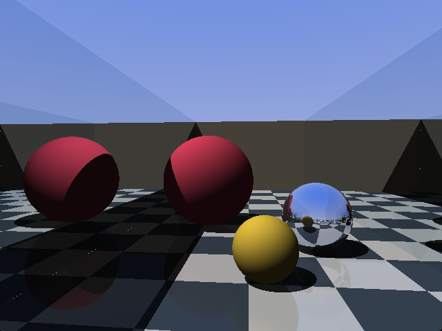
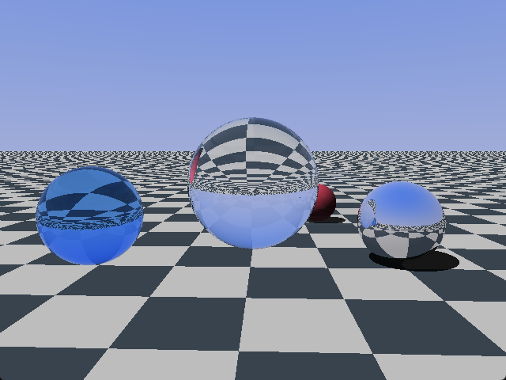
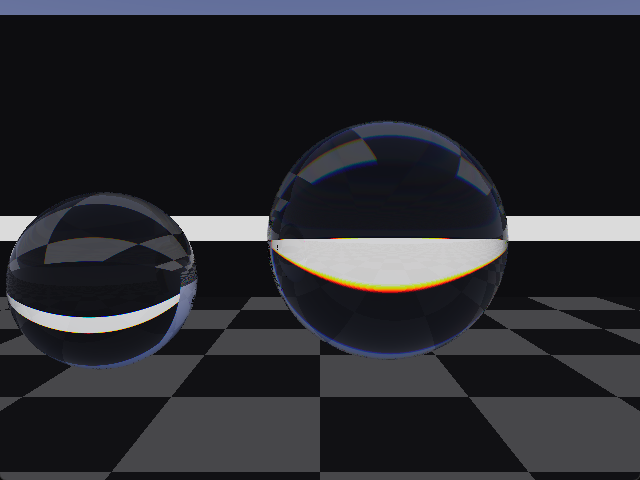
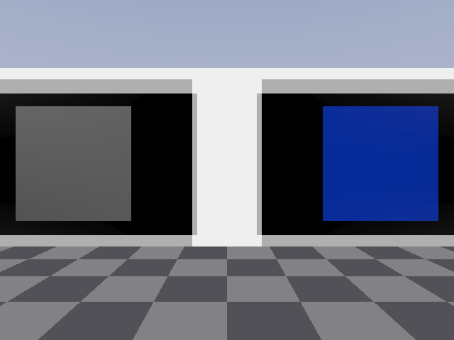
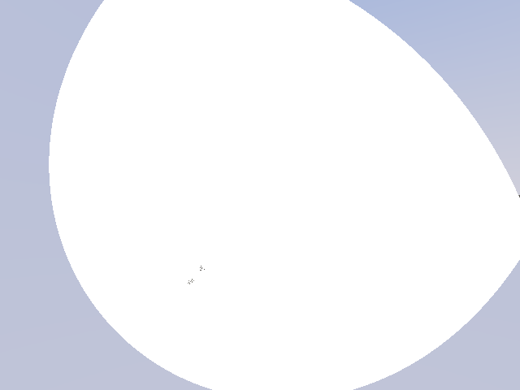
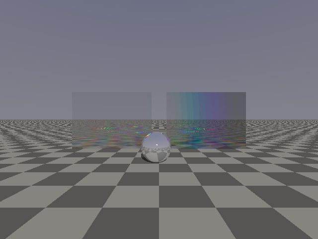
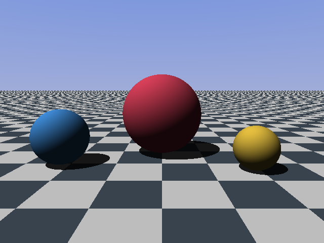
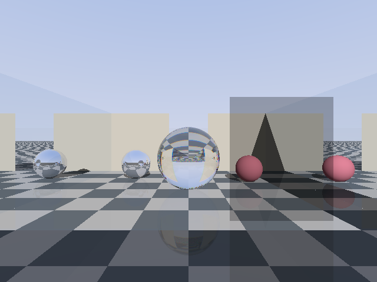

an optics-first 3D game engine: a spectral ray tracer where light obeys physics
The public C API across twelve modules. Structs, constants and every function the umbrella header exposes.
The full reference, including the shader constraints that shape how the GPU walk is written.
Every effect below is computed from the physics rather than approximated by a shader trick, and every one is pinned by a host test against its closed-form answer.

Facing mirrors produce a true infinite corridor, to any depth, at any viewing angle. Screen-space reflection structurally cannot draw this frame: it can only reflect what is already on screen. Here the rays really bounce, up to sixteen times.

The real pair, s and p computed separately, not Schlick's fit. Refraction, total internal reflection, and reflectance that climbs toward grazing incidence because physics says so and not because a parameter does. The checker floor hanging upside down inside the ball lens is the classic proof that the refraction is real.

Twelve wavelengths per pixel, each refracting at its own Cauchy n(lambda), folded to sRGB through the CIE 1931 colour matching functions. Crown glass fringes gently. Flint tears the same white edge into a spectrum about five times wider, which is exactly why camera lenses pair the two.

Every ray carries a Stokes vector and every interface applies a Mueller matrix. Crossed polarizers go black. A third pane at 45 degrees between them brings back exactly one eighth. A waveplate writes interference colour because its retardance runs as 1/lambda.

Apex, axis, vertex radius of curvature, conic constant, rim. Stand at a paraboloid's focus and every zone of the dish reflects your eye into the sun, so the whole aperture flashes at once: a solar furnace, seen from the inside.

The conical, off-plane vector form. The groove component of the direction is conserved, the dispersion component picks up m·lambda/d, and m = 0 falls out as exact specular. Orders sweep across a ruled panel as you walk, the way a CD tilts its colours.
source/cpu_trace.c is a complete second tracer in plain C, and
shaders/trace.hlsl is its statement-for-statement twin. The C version is allowed
to be slow and obliged to be right: every optical law lands there first, held by host tests
to closed-form answers. Then holo_oracle_diff() reads the presented GPU frame
back and compares it to a CPU render of the same camera.

That diff is the engine's central correctness mechanism. A change that lands in one tracer and not the other stops being a mystery and becomes a failing exit code. The bar is a mean error under 1/255 with fewer than 0.75% of pixels off by more than 8/255, and the whole example suite currently sits between 0.02 and 0.12 mean.
The host tests assert physics rather than pixels: 236 checks across 7 suites covering Snell's angles into n=1.5 glass, the 41.81 degree critical angle, 4% reflectance at normal incidence, a vanishing p-component at Brewster's angle, Malus's law at five angles, the three-polarizer paradox to the exact eighth, BK7's Abbe number computing to its catalogue 64, a paraboloid focusing every zone at R/2, an ellipsoid imaging focus onto focus, Littrow retroreflection, and the conical invariant.
Each milestone left a runnable demo behind.

m7_room, m8_furnace and m9_spectrum are interactive:
click to capture the mouse, WASD to walk, Space to jump,
T to toggle spectral tracing, Escape to release the mouse.
Every GPU example also accepts --diff, which renders the same frame through the
CPU tracer and compares. The exit code is the verdict.
An optics-first 3D game engine by magmacrunch media. The games it exists for, starting with Crystal Mirror Maze, are built entirely from analytic primitives (planes, rectangles, spheres, conics) and rendered at low resolution by design. Closed-form intersections at 640x480 are exactly the workload a fullscreen-shader ray tracer can afford in real time, and a tracer is the only renderer in which curved mirrors, refraction, dispersion and polarization come out correct rather than faked.
C99 engine, HLSL shader, on sokol for the window, GPU device and swapchain. The tracing runs on the GPU as a fullscreen-quad fragment shader over a scene of analytic primitives delivered in one uniform block, on a fixed-timestep simulation ported from magnolia. Games compile the engine's sources directly, magnolia-style: there is no library build and no package registry, and a game is three callbacks and a scene.
Requires Visual Studio. No other dependencies, since sokol is vendored.
build.bat # builds every example into build\
build.bat test # builds and runs the host testsRun the examples from the repository root. They read shaders\trace.hlsl at
startup, so you can edit the tracer and relaunch without recompiling.
One sphere from the vertical slice, verbatim:
{ .center = { 0.0f, 1.0f, -2.0f }, .radius = 1.0f,
.albedo = { 1, 1, 1 }, .transmit = 1.0f,
.ior = 1.62f, .disperse = 0.02f },No editor, no ECS, no general physics engine, no mesh import, no skinned animation, no GUI toolkit, and there will never be triangles. Neither target game needs any of them, and each would cost more than it returns. Scenes are built in code from primitives, and collision is a capsule against axis-aligned walls.
Named after the Dag Henderson track "hologram of a dream", published by magmacrunch music.
PolyForm Noncommercial 1.0.0 · Copyright 2026 magmacrunch media. Any noncommercial purpose is permitted, and commercial use is reserved to magmacrunch media. This differs deliberately from magmacrunch's Apache-2.0 2D engines: those are infrastructure for anyone, while hologram is the optics engine under magmacrunch's own games. Vendored sokol headers, by Andre Weissflog, keep their zlib licence.